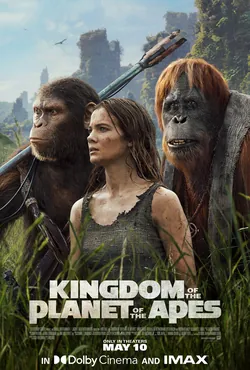

The genetics
Genetics lies in the background of this film, set three centuries after the events of the earlier Planet of the Apes films. The world it shows is the legacy of the ALZ-113 virus from those films, which in the series' backstory raised the apes' intelligence and in this film is said to have spread to the last immune humans and left most of humanity feral and speechless. The film does not show or discuss the scientists or the work behind the virus; its story concerns the apes' struggle over Caesar's legacy and Mae's attempt to restore human communication, and no genetic work is done on screen. The idea that a virus could make apes intelligent and strip humans of language is fiction.
How genetics is portrayed
- Overall portrayal of genetics
- negative Genetics appears only through the man-made virus whose legacy is humanity's fall into muteness; the film shows no scientists and offers no counterweight.
- Outcome of the genetic intervention
- negative The backstory ALZ-113 virus that shaped this world has spread to the last immune humans and left most of humanity feral and mute; no genetic work is done during the story itself.
The story
About 300 years after the death of the ape leader Caesar, apes have formed many clans while most surviving humans have become feral and mute. Noa, a young chimpanzee of the falconry-practising Eagle Clan, returns from collecting eagle eggs to find his village burned by raiders led by the gorilla Sylva, his father killed and his clan abducted. On his way to rescue them he meets Raka, an orangutan scholar who teaches him Caesar's true legacy, and a human girl, whom Raka names Nova but who can speak and is called Mae. They are captured and taken to the coastal kingdom of Proximus Caesar, a tyrant who enslaves clans to open an old human vault full of technology. Mae wants a 'book' from the vault, in fact a satellite decryption key. Noa, his friends and Mae flood the vault and defeat Proximus, and Mae takes the key to a human settlement, which can now contact other survivors.
Sources
- https://en.wikipedia.org/wiki/Kingdom_of_the_Planet_of_the_Apes
- https://es.wikipedia.org/wiki/Kingdom_of_the_Planet_of_the_Apes
- https://fr.wikipedia.org/wiki/La_Plan%C3%A8te_des_singes_%3A_Le_Nouveau_Royaume
- https://planetoftheapes.fandom.com/wiki/Kingdom_of_the_Planet_of_the_Apes
- https://movies.fandom.com/wiki/Kingdom_of_the_Planet_of_the_Apes